quant-platform · signal research
Time-series momentum on Binance USD-M perpetuals, 2020 to 2026. A signal research write-up.
Trend following bets that market movements in one direction will continue in that direction, essentially a time series momentum model. Every sunday close, look at each coins return over the past \(L\) weeks. If it trends up, go long, if it goes down, short. Hold for a week and the decide again.
For coin \(i\) in week \(t\), with \(r_{i,t}\) its weekly log return, the signal is the sign of the trailing move:
$$ s_{i,t} = \operatorname{sign}\Big( \sum_{k=1}^{L} r_{i,t-k} \Big) $$The sum stops at 1, so it only considers weeks that have closed. How much of each coin is held, is sized according to the how much the coin swings. Each sign is divided by the coin's volatility over the last 12 weeks, \(\sigma_{i,t}\), and positions are scaled so that they add up to one.
$$ w_{i,t} = \frac{s_{i,t} / \sigma_{i,t}}{\sum_j \lvert s_{j,t} \rvert / \sigma_{j,t}} $$A coin that swings twice as hard gets half the position, so no single wild coin runs the book. The book holds every liquid Binance USD-M perpetual this way at once. Its weekly return is the weighted sum of the coins' returns, minus funding and the cost of trading.
Trend is the simplest idea on the research list, which is why it came first. We used it to build and harden the research practice before the harder lanes.
Trend following is alternative beta, not alpha. It is a published style premium that any one can harvest, as such our expectation is modest. A sharpe of 0.5 to 0.8 after costs. It is expected to exist due to market under or over reactions, and the uncomfortable cost of holding (sideways markets expect small losses). What we hope to harvest, is gains when the market moves hard. This shape makes trend a form of insurance against big moves, and predicts a book whose returns curves upward against the markets.
To see that shape, take every month of the backtest and mark it as one dot on a chart. How far right the dot sits is the market's return that month. How high it sits is the trend book's return that same month. Then draw the curve that best fits the dots.
$$ R_{\text{book},t} = a + b\,m_t + c\,m_t^2 + \varepsilon_t $$Here \(m_t\) is the market's return in month \(t\) and \(R_{\text{book},t}\) is the book's. Each term is one feature of the curve.
The prediction is \(c > 0\). Drawn out, the curve is a smile, a shallow dip in quiet months that rises at both ends. In a long crash every coin's trailing return turns negative, the book goes short, and it earns as prices keep falling. In a long rally it is long and earns as they keep rising. The smile shows best on monthly or quarterly returns, since trend needs a few weeks of a move before it changes side, so week by week the shape is faint.
There are two reasons to expect the premium to be larger in crypto. Perpetual futures are heavily levered, so a sharp move liquidates the crowded side, and the liquidations push price further in the same direction. If that drives it, trend should do better when open interest is high. Crypto also has no earnings calendar or central disclosure, so news prices in over days rather than seconds, which suits a weekly horizon.
The hypothesis fails if the edge cannot be told apart from luck. The null is a true Sharpe of zero, where any profit comes from having tried many settings. The final judge is a registered test on data this research never searched.
Data is sourced from Binance's Vision archive, a public dump of historical market data. It is streamed straight through the platform's C++ data source.
The data used incudes daily price bars for every USD-M perp and funding payments for 2020 to 2026. Trade prints and order book depth are used only to measure costs.
681 crypto perps, 157 of them delisted and kept for the span they traded. 183 stock, ETF, commodity and tokenised perps dropped. A coin counts in a week only if its past 30-day median volume was at least $10M.
The book earns the price move on each position and pays funding on it, and the sign of \(w_{i,t}\) flips funding into income for a short. Trading cost is charged only on the change in position, so a weight moving from +0.02 to -0.02 pays on 0.04.
The cost of one trade is three pieces:
$$ c = \underbrace{5\ \text{bps}}_{\text{fee}} + \underbrace{s(V)}_{\text{half spread}} + \underbrace{50 \cdot \frac{Q}{D(V)}}_{\text{impact}} \ \text{bps} $$Busier coins have tighter spreads and deeper books. Spread and depth were measured on 72 coin-days and fitted against volume, so any coin is priced from its volume alone. An order the size of \(D\) walks the whole 1% band and fills about 50 bps away on average, so an order of \(Q\) pays \(Q/D\) of that. Headline results use a $100k book.
Backtests are evaluated on out of sample and walk forward tests. Every choice (lookback, conditions) is made on past data then scored on the stretch that follows. Final results are scored against the signal gate, the bar here changed from a simple sharpe check to a calibrated gate.
Every result carries a stamp. Pass, every check passes and probability real is 0.95 or more. Park, every check passes and it sits between 0.5 and 0.95, too little data rather than refuted. Fail, any check fails, listed by code. A check the data cannot settle yet is listed as open.
| code | check | asks |
|---|---|---|
| D1 | Coverage | Five years of data and a full bull and bear cycle |
| T5 | Point in time | Universe, liquidity and costs as known at each bar |
| S1 | Significance | Probability real, against the luck bar for every trial |
| S2 | Year stability | Still positive, and at least 40% of the whole, with any one year removed |
| S3 | Out of sample | Walk forward positive and not far below in sample |
| S4 | Neighbours | The settings either side of the winner earn too |
| S5 | Selection overfit | The winner is not just the luckiest cell of the grid |
| S6 | Baseline | Beats the long and short baskets over the same weeks |
| V1 | Bootstrap | The worst 5% of bootstrap Sharpes stays above zero |
The lane started small. Ten large perps, ADA, AVAX, BNB, BTC, DOGE, ETH, LINK, LTC, SOL and XRP, from 2022 to 2024, one-minute bars rolled up to weekly closes. The book was simpler than the one in Method. Each coin took a full long or short position, the ten were weighted equally, and each sign flip paid a round trip from a flat per coin cost table. Every number in this section comes from that sample, and none of it is carried forward. It is the starting point the later work had to reproduce.
The first question was which lookback \(L\) pays, so the rule was run at 1, 2, 4, 8 and 12 weeks. Two reference books sat alongside it, the same ten coins held long, once at equal size and once sized by volatility. Trend has to beat simply owning the coins.
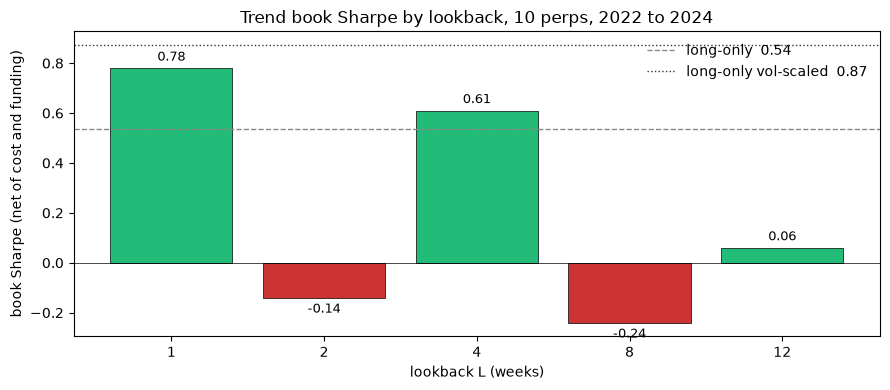
1 week made 0.78 and 4 weeks 0.61. Between and beyond them, 2 and 8 weeks lost money. Neighbouring lookbacks disagreeing like this is the sawtooth. A real trend effect should change smoothly as the lookback grows, so a saw is a warning that the winners may be lucky cells in a noisy grid.
Pooled, trend did not beat the volatility sized long book at 0.87. Its case was the year split. Both long books lost 1.2 to 1.4 in the 2022 bear and earned 1.5 to 1.8 in the 2023 and 2024 bull. Trend earned 0.5 to 0.9 in every year, bear included, because in 2022 the trailing returns were negative and the book was short.
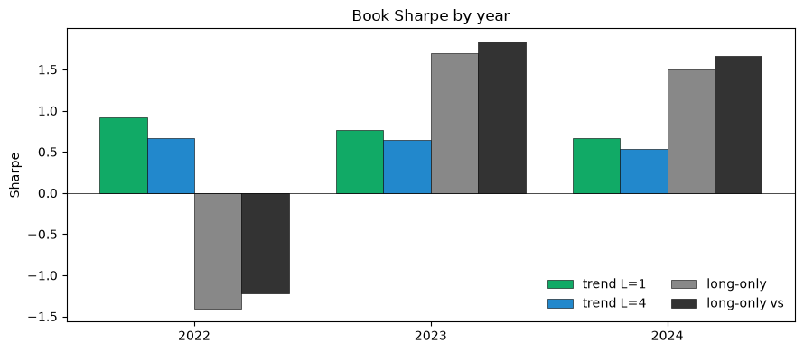
Both winners kept their sign at twice the cost, and funding took only 0.06 to 0.10 off them. But the two lookbacks leaned on different coins, and three years is only 156 weeks per coin.
A long in a hot market pays funding every eight hours. If price rose less than the funding a long paid over the window, holding it lost money. The funding-aware sign subtracts that trailing funding from the trailing return before taking the sign. It lifted 1 week from 0.79 to 0.85 and 4 weeks from 0.61 to 0.65, mostly in the positive-funding years 2023 and 2024. The two signs disagreed in only 2 to 5% of weeks, so the lift rested on a handful of trades and sat inside the noise.
Two ways to trade less or trade better. A dead band only flips the position when the trailing return clears a threshold, ignoring small wiggles around zero. It halved turnover but did not lift Sharpe, and 2 and 8 weeks stayed negative at every threshold, so the sawtooth was not caused by weeks sitting near zero. Checking the signal daily instead of weekly made 0.2 to 0.3 against 0.5 to 0.8. The signal has nothing useful inside a week, so weekly stayed.
The plain sign is the crudest reading of a trend. Four richer shapes were tried. A continuous position scaled by how strong the trailing move was. Moving average and exponential moving average crossovers, the standard trend shapes in traditional markets. A scored EWMA from the trend literature. Each was judged out of fold, fixed on earlier data and scored on later data it never saw.
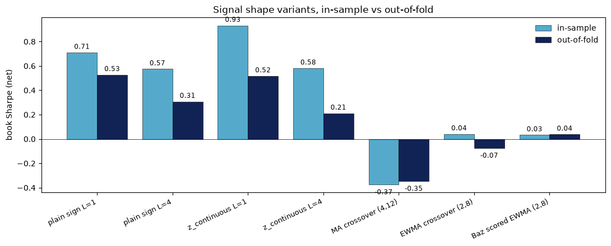
The continuous position looked better in sample, 0.93 against 0.71, and tied the plain sign out of fold at 0.52 against 0.53. The crossovers lost or sat flat. Simple won.
If 1 and 4 weeks both work, averaging them might work better. And if the sawtooth is real, a book that goes with the winning lookbacks and against the losing ones should profit from it. Three combiners were tried, the average of the two winners, a sawtooth book with each lookback's sign fitted on past data, and a book reweighting lookbacks by their recent Sharpe.
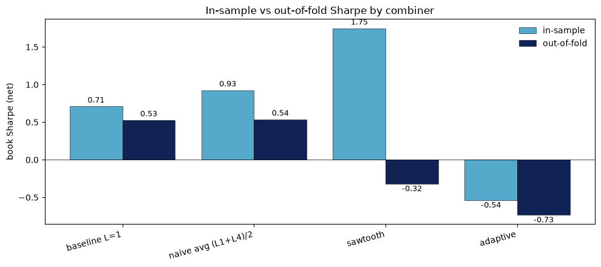
In sample the sawtooth book made 1.75. Out of fold it lost money. The fitted signs on 2 and 8 weeks changed from one fold to the next, so the pattern the full sample showed appeared in only one of four folds. The average of the winners tied the plain sign, and the reweighting book lost both ways. The sawtooth is not a feature of the market, and building against it chases luck.
The plain sign at 1 week made 0.78 over the sample and 0.53 out of fold, positive every year and robust to double cost. Every refinement tried, funding, dead bands, daily checks, shapes and combiners, failed to beat it on new data. But the out of fold record was four folds of about 30 weeks, ten coins that all survived, and a lookback grid shaped like a saw. There was not enough data to tell a real effect from a lucky one. Every grid run here also still counts as a trial against later results. Trials do not reset when the data widens.
Ten coins over three years could not tell a real effect from a lucky one. The platform's data source then gained the ability to stream the Binance Vision archive directly, every USD-M perp Binance has ever listed, live or delisted, from 2020. Five times the history and forty times the coins. The lane page was rewritten as a plan on the new data. Every number from the first pass was marked as something to re-prove rather than carried forward.
Before trusting anything wide, the new pipeline had to return the old numbers on the old window. If it did not, every later result would inherit the fault. The old pipeline had read one minute files from disk and was since deleted, but its recorded numbers survived. So the same ten coins over 2022 to 2024 were streamed through the new source and run through the old method unchanged.
Every number matched exactly. The lookback grid with and without funding, the grid at zero, one and two times cost, both long-only books, and each coin's Sharpe individually. The one catch was the archive itself. Its monthly files leave out five days for LTC, SOL and XRP in early 2022, and one of the missing days is a Sunday, so those coins would have taken their weekly close from the Friday. The loader refills missing days from the archive's daily files. Without the refill, the book moved by 0.01 to 0.02.
A universe of coins listed today would only contain survivors, and testing on survivors flatters any strategy. So the universe is every coin that ever traded, each included only for the span it traded, with membership decided from what was known at the time.
Halts need care in both directions. BNX sat frozen at 119.93, then reopened at 1.59 after Binance changed its units, which reads as a 99% crash that never happened. Signals skip the halt, and redenominations like BNX come from a named list and are never booked as moves. A genuine halt is different, since a position cannot be closed while its coin is frozen, so the jump on reopening is booked in the book's return.
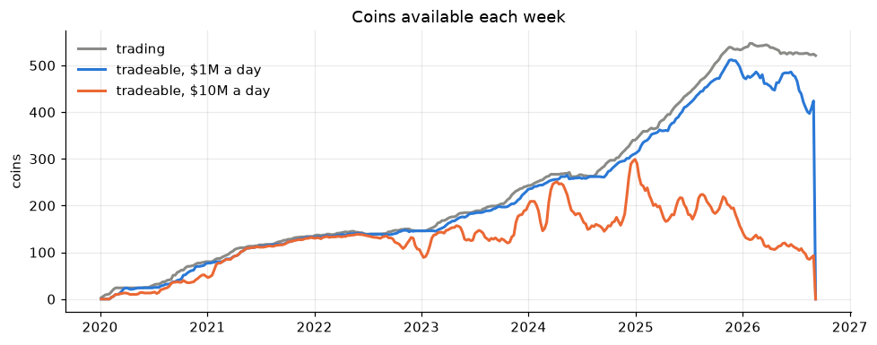
At a $1M floor, almost every coin that trades is tradeable, rising from 31 in 2020 to over 400 by 2026. At $10M the count peaked at 200 to 300 in 2024 and 2025 and fell to about 110 in 2026. Most new listings are small. The deep, liquid universe is a few hundred coins at best, and it is thinning.
Before building any strategy on the new data, we looked at the data itself. Which coins exist, how they move, how much they move together, and whether a coin's past says anything about its next week. Nothing in this section is money. Every number is a description or a correlation, with no costs and no funding taken off. It set expectations for the backtests that followed. Coins here are tradeable at a floor of $1M a day.
A typical coin moves about 120% a year, the calmest tenth 93% and the wildest tenth 207%. Extreme weeks are common. If weekly returns followed the normal bell curve, a week beyond 3 standard deviations would be rare. Here it happens five times as often.
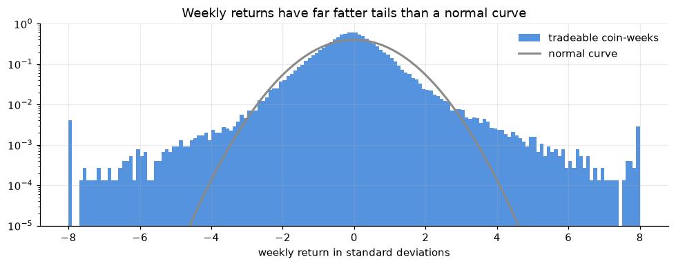
A better fit is a Student t curve, a bell curve with one extra setting for how heavy the tails are. The data fits it at about 3.3, which is very heavy. A 4 standard deviation week is about 100 times more common than the normal curve says. The tails also lean up. Weeks beyond +4 happen more than twice as often as weeks beyond -4, so coins spike up harder than they crash. For a short position that is squeeze risk.
Volatility also differs about twofold between coins and swings nearly tenfold over time, from 27% to 244% a year for the market. Dividing each coin's return by its own recent volatility puts all coins on one scale, which is why the book sizes positions that way. It fixes the size of moves, not the jumps.
The average pair of coins has a correlation of 0.57 to 0.65 in every year to 2025, and one common factor, the market, explains 60 to 68% of all movement. Hundreds of coins are worth two or three independent bets. Adding more coins adds very little. 2026 is the exception so far, with correlation down to 0.31.
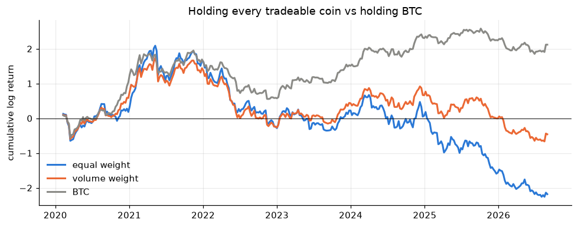
Holding every tradeable coin in equal amounts lost about 89% over the span, while BTC rose about eightfold. The average coin lost 1.4% a week, and it was not just new listings dumping, since coins over a year old lost about the same. Two things follow. Shorting the average coin made money, so a trend book's short side starts with the wind behind it. And beating a long-only basket of alts proves little, since that basket lost nearly everything.
This is the question trend rests on. Take a return over the past \(L\) weeks and correlate it with the return next week. Positive means moves continue, which is trend. Negative means moves snap back. Because coins move together, it was asked three ways.
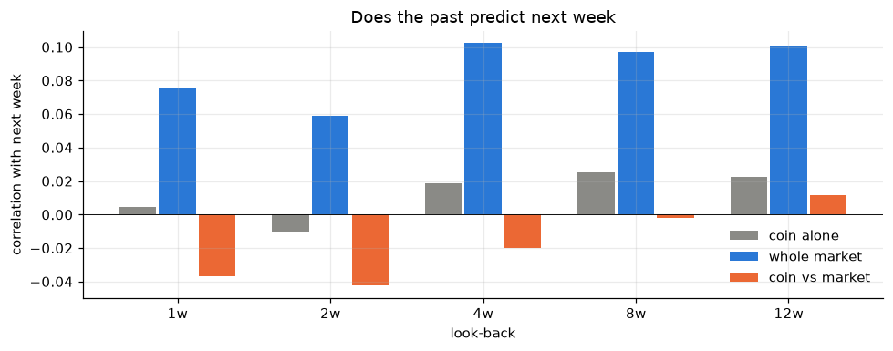
The whole market trends, weakly. Its correlation with next week is +0.06 to +0.10 at every look-back, 1.1 to 1.9 standard errors from zero, where about 2 is the usual bar. Suggestive, not proven. It is carried by 2021 and reverses in 2020, 2022 and 2026.
Coins against the market do the opposite, and more strongly. A coin that beat the market over the last 1 or 2 weeks tends to lag it the next week, at 3.5 to 3.9 standard errors. By 8 weeks the effect has faded to nothing. A coin on its own barely predicts itself. Its trend is mostly the market's trend, partly cancelled by the snap-back against the market.
Split by size, coins trading $1M to $10M a day show no trend at all, and coins above $10M show a little. That is where the $10M floor used from here on comes from.
Funding follows the cycle. Longs paid 30 to 65 basis points a week in 2020 and 2021 and 23 in 2024. Shorts paid in 2022, 2025 and 2026. Coins that have rallied pay slightly more, so a trend book long a rising coin pays for the privilege.
Up to this point every result used a guessed cost, 7.5 basis points each way on coins trading at least $10M a day and 15 below that. A backtest with a guessed cost can be made to say anything, so cost was measured. The fee is known, 5 bps. The half spread and the depth of the order book were measured from the archive's trade tape and depth snapshots.
The sample is four dates, 10 March 2023, 2024 and 2025 and 10 June 2026, two days each, with about 20 coins per date drawn across liquidity bands from BTC-sized down to $300k a day. Trade prints and depth are heavy to stream, which is why this is a sample and not the whole universe. Of 80 coin-dates, 72 survived cleaning.
Spreads turned out tight. Coins trading over $100M a day mostly pay under half a basis point, and $1M to $10M coins mostly 0.5 to 3. The widest thin names reach 6 to 15.
Half spread and depth were each fitted against a coin's daily dollar volume on logarithmic scales, so cost can be read off for any coin in any week from its volume alone.
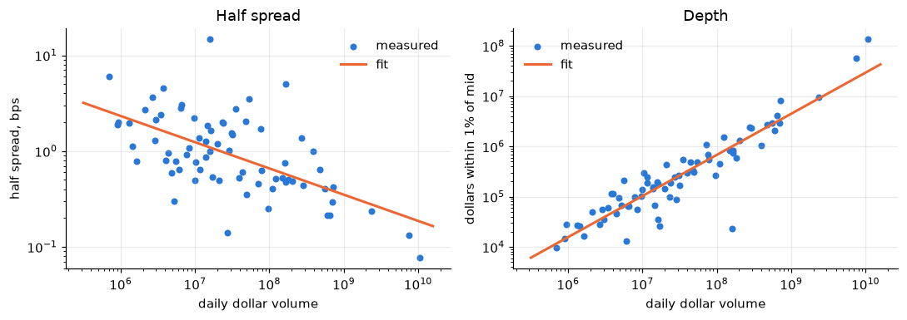
Depth tracks volume well, the fit explaining 84% of the variation. Half spread tracks it loosely, 36%, and misses about twofold either way. That matters little, because depth is where the cost is.
| daily volume | half spread | depth within 1% | cost, $10k trade | cost, $100k trade |
|---|---|---|---|---|
| $1M | 2.3 bps | $16k | 39 bps | 327 bps |
| $10M | 1.2 bps | $103k | 11 bps | 55 bps |
| $100M | 0.7 bps | $678k | 6.4 bps | 13 bps |
| $1,000M | 0.4 bps | $4.5M | 5.5 bps | 6.5 bps |
For a small trade in a liquid coin, cost is mostly the fee. A $10k trade in a coin doing $10M a day costs about 11 bps each way, a little above the guess. The same coin at $100k costs about 55 bps, almost all of it impact, because only about $100k rests within 1% of its price. Cost is a question of size.
The 4-week books were then repriced off the ladder at three book sizes. A coin's trade is its change in weight times the book, so a larger book means larger orders against the same depth.
| book size | per coin, whole span | per coin, later weeks | market, whole span | market, later weeks |
|---|---|---|---|---|
| guessed cost | 0.85 | 0.55 | 0.80 | 0.67 |
| $100k | 0.85 | 0.53 | 0.79 | 0.66 |
| $1M | 0.68 | 0.16 | 0.70 | 0.45 |
| $10M | −0.54 | −1.40 | −0.15 | −0.95 |
At $100k the measured cost barely moves the books, so the guess had been about right for a book that size. At $1M impact bites, hardest on the later 40% of weeks. At $10M every book loses money. Trading smaller coins is worse. A book on coins down to $1M a day goes negative on recent weeks from a $100k book.
The later weeks suffer because the books thinned. A coin doing $10M to $100M a day rested about $187k within 1% of mid in 2023 and 2025 and $298k in 2024, but only $87k in 2026. Less depth for the same volume means more impact.
Cost does not kill trend at a small size and does kill it at a large one. From here on, headline results are priced off the ladder at a $100k book.
This is the test the lane was rebuilt to run. The plain rule from the first pass, on every liquid crypto perp, over six and a half years, 349 weeks and 681 coins. The lookbacks were the same five as before, 1, 2, 4, 8 and 12 weeks. Cost was still the guess at this point, 7.5 bps each way on coins above $10M a day and 15 below, later confirmed as about right for a $100k book.
Four books ran the rule.
Three checks before believing any number. Random long and short signals should lose about the cost of trading, and they did, averaging −0.28 and never beating +0.48. A signal one week staler should do worse, never better, or the backtest is seeing the future, and it fell from 0.85 to 0.36. And zero, one and two times cost should give three different answers, or cost is not wired in, and they gave 0.90, 0.85 and 0.81.
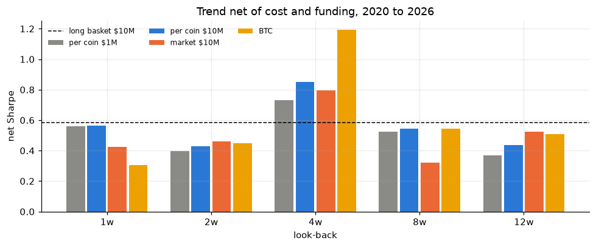
| lookback | per coin $1M | per coin $10M | market $10M | BTC |
|---|---|---|---|---|
| 1 week | 0.56 | 0.57 | 0.42 | 0.30 |
| 2 weeks | 0.40 | 0.43 | 0.46 | 0.45 |
| 4 weeks | 0.73 | 0.85 | 0.80 | 1.19 |
| 8 weeks | 0.52 | 0.54 | 0.32 | 0.54 |
| 12 weeks | 0.37 | 0.44 | 0.52 | 0.51 |
Every book made money at every lookback. Four weeks was best in every book, 0.85 per coin and 0.80 for the market book, against 0.58 for holding the basket. The sawtooth from the ten-coin sample was gone. There, 2 and 8 weeks lost. Here every lookback earned, with one peak at 4 weeks. It read as a real effect that the small sample had been too noisy to show.
Cost was not the constraint. Doubling it moved the per coin book from 0.85 to 0.81. Funding was the bigger drag, about 6.5% a year on the per coin book and 12% on the market book, which spends more time long when funding is hot.
| 4 weeks | 2020 | 2021 | 2022 | 2023 | 2024 | 2025 | 2026 |
|---|---|---|---|---|---|---|---|
| per coin $10M | 1.06 | 1.69 | 0.79 | 0.82 | 0.25 | 1.15 | −0.64 |
| market $10M | −0.63 | 1.73 | 0.76 | 1.06 | 0.44 | 1.27 | −0.53 |
| long basket | 2.37 | 2.10 | −1.63 | 1.38 | 0.74 | −0.85 | −0.11 |
The per coin book was positive in every full year from 2020 to 2025, including the 2022 bear, where it made 0.79 while holding the basket lost 1.63. 2026 broke it. Every trend book was negative in 2026, the year coins stopped moving together. The market book also lost in 2020.
Coins trading $1M to $10M a day, run on their own, earned less at 4 weeks, 0.46 against 0.85, and far less reliably, losing in 2022, 2023 and 2024. Most of what they earned was the same market bet, the two books correlating 0.61. Small coins carry a weaker and less reliable version of the same trend, so the $10M books became the headline.
Picking the best lookback after seeing all the data flatters it. So the weeks were split into five blocks, the lookback was picked on the first three, and scored on the last two. Four weeks was picked in every book. On the unseen stretch from February 2024, the market book made 0.67 and the per coin book 0.55. Every lookback of both books stayed positive out of sample.
Then the correction for everything tried. The count stood at 45 trials, the 20 cells here plus about 25 on the ten-coin sample. Against a luck bar of 0.46 for that many tries, the per coin book was judged 84% likely to be real and the market book 81%. Real enough to pursue, not certain.
When most coins rise together, the per coin book ends up long almost everything, which is just a bet on the market. Its profit splits exactly into two parts. The market part is its net long or short exposure times the basket's return. The rest nets to zero exposure and earns only from which coins it is long and which it is short.
At 4 weeks the market part carried 80% of the profit, and the per coin book's returns correlated 0.80 with the market book. The per coin book is mostly a market bet. The rest still earned on its own, and survived removing each coin's sensitivity to the market and capping extreme weeks. That clashed with the EDA, where coins ranked against the market snapped back. Ranks and money disagreed, and it was left as an open lead.
The bar written before any run asked for an out of sample Sharpe above 0.7 and a positive Sharpe in every calendar year. Neither book passed. The market book made 0.67 out of sample and lost 2020 and 2026. The per coin book made 0.55 and lost 2026. Both cleared double cost, the bear year and the limit on cost drag.
So the lane did not close and did not pass. Trend earned at every lookback and in every full year to 2025, mostly as a bet on the market's own trend, and failed in 2026. Something that works in most conditions and fails in one raises the next question. When does it work?
The wide sweep left a book that earned in most years and lost in 2026. A signal like that can still be worth trading if it earns reliably inside one kind of market, and that kind of market can be recognised before the trade. A separate system would then switch the signal on and off. This section looks for that condition.
Six ways of describing the state of the market, each measured only from the past.
Each was cut into low, middle and high thirds, with the cut points taken only from earlier weeks, so no week is sorted using its own future. Every result was split into a training stretch, 2020 to February 2024, and the unseen stretch after it. A condition only counts if the two agree.
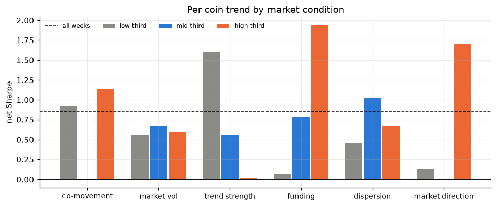
2026 turned out unlike any earlier year, with the lowest co-movement, the lowest volatility and the highest dispersion. Coins stopped moving as a pack. But those conditions could not explain the loss, because all of 2026 sits in one third of each. Two conditions agreed between training and unseen weeks.
After a rise the book is mostly long, so its profit could simply be the market continuing up. It was. Holding the basket long over the same weeks made 1.54, nearly as much as trend's 1.71, and the condition lost in 2022 and 2026. After a rise is mostly being long in a rally.
Low trend strength was different. Over those weeks the long basket lost 0.91 while trend made 1.61, and the profit came from the short side. After a small market decline, coins kept drifting down and the book was short them. It was positive in every year it covered, 2021 to 2026, including 2026 itself. Inside 2026, weeks after a small move made 1.01 and weeks after a large one lost 1.85. The year's loss came from trading after big market moves. This condition was named the moderate month.
It was found by looking, so the next step was to try to break it.
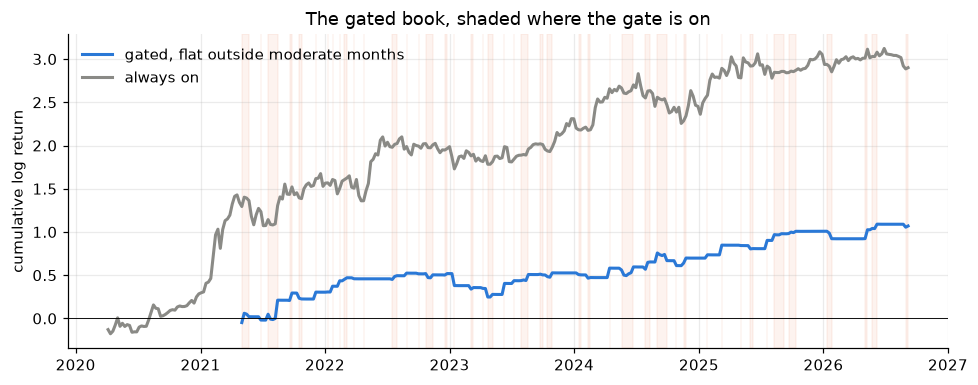
As a book that trades only in moderate months and sits flat otherwise, it made 0.90 against 0.85, positive every year, with half the drawdown. But it was in the market only 29% of the time, 98 weeks in all, and earned 20% a year against 45%. A cleaner, smaller book, not a bigger one.
By now about 95 settings had been tried, counting the sweep, the map and the stress variants. Against that many tries, the sleeve read as 55 to 64% likely to be real. About even odds, on 98 weeks. No window or cut adds more weeks, so the constraint was the sample itself.
This is where the practice changed. A conditional signal is judged on its sleeve, the weeks it actually trades, since those are what would run live behind a regime switch. Averaging in the flat weeks only measures the cost of having no switch. And detecting the condition live is a separate project from proving the signal works inside it. Signal research comes first, then regime detection, then building the strategy.
The hypothesis said trend feeds on leverage, so the last check used open interest, the total size of open perp positions, counted in contracts across six majors. Its growth said nothing reliable. Its level did. When open interest sat below its recent average, after the market had shed leverage, trend lost 1.39, in training and unseen weeks alike. At middling and high levels it earned. That fits the leverage idea from the other side, trend needs leverage in the market to feed its moves. The evidence is thin, about 190 weeks from late 2022, and it did not sharpen the moderate month when the two were combined.
Parked. Trend after a moderate market month looked like a real effect on a small sample, not a proven one, with 98 weeks as the binding constraint. After a rise was mostly being long. Low open interest was a warning, on little data.
By now there was one book that earned and one condition that looked promising but thin. Three questions were left about the signal itself. Would a smarter reading of the trend beat the plain sign. What is the profit actually made of. And how far could the headline number be trusted.
The plain sign uses two prices and ignores everything between them. Two richer readings were tried, with the sizing held fixed so only the signal changed.
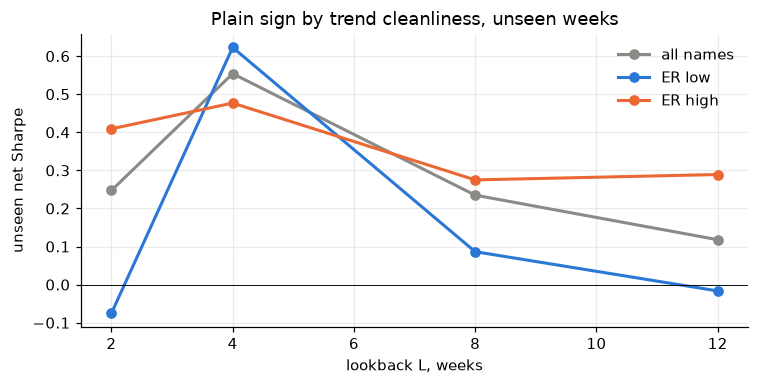
Where trend pays, the direction of the move is the whole signal.
A coin's 4-week return is two things added together. The market's 4-week return, shared by every coin, and the coin's return beyond the market. The trend book bets on the sign of the sum. Betting on each piece separately shows where the money comes from.
| book at 4 weeks | net Sharpe |
|---|---|
| Full trend book, sign of the coin's own return | 0.85 |
| Market only, sign of the market's return on every coin | 0.80 |
| Coin picking only, long coins that beat the market, short those that lagged | 0.28 |
| Coin picking reversed | −0.49 |
Timing the market is 0.80 of the 0.85. Picking coins adds 0.05, and it works in the trend direction, not the reverse. The EDA had seen coins snap back against the market, and repeating the coin-picking book at other horizons shows where.
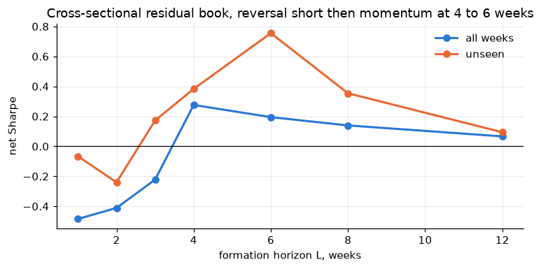
Over 1 and 2 weeks coins reverse against the market. Around 3 weeks it crosses zero, and from 4 to 6 weeks coins that beat the market keep beating it. So the snap-back is a separate, faster effect, and it was set aside for the mean-reversion research.
The last step fitted next week's return on three things at once, the market's trend, the coin's trend beyond the market, and the funding paid on the coin.
$$ r_{i,t+1} = \alpha + \beta_m\, m_t + \beta_c\, c_{i,t} + \beta_f\, f_{i,t} + \varepsilon_{i,t+1} $$All three came out positive, with the market term at t 12.7, the coin term at 3.3 and funding at 3.6. Funding having its own effect meant the trend result was not just funding in disguise.
A Sharpe measured once is one draw. To see the range it could have come from, the book's weekly returns were resampled 5,000 times in 8-week blocks.
| book | Sharpe | worst 5% | middle | best 5% |
|---|---|---|---|---|
| Per coin | 0.85 | 0.36 | 0.92 | 1.47 |
| Market | 0.80 | 0.29 | 0.86 | 1.42 |
Both stayed positive in essentially every resample, so the edge is unlikely to be zero. But the range is wide, 0.3 to 1.4. A real premium, loosely measured.
Then the crashes, which trend is meant to earn through.
| event | market book | per coin book |
|---|---|---|
| May 2021 flush | +64% | −16% |
| LUNA, 2022 | +69% | +63% |
| FTX, 2022 | −27% | −1% |
| March 2023 depeg | −14% | −7% |
| August 2024 unwind | +18% | +5% |
The textbook shape. Trend earns large in a crash that keeps going and loses when a crash snaps back before the signal can turn.
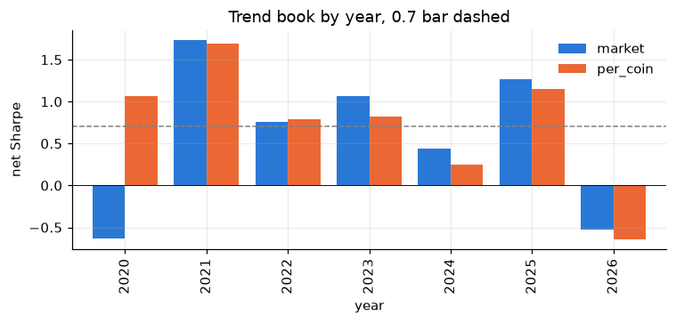
A market-timing premium near 0.8, with a small coin-picking kicker and a separate funding effect. Not improved by any richer reading of the trend. Real but loosely measured, with the classic crash profile. The work was judged ready to write up.
Before the write-up, the whole of the research was reviewed. The review found an engine bug, replaced the bar the results were judged against, and corrected five mistakes. Then every result was scored again.
A daily bar summarises a day and carries that day's closing price. The data source was stamping each bar with the time the day opened. Anything driven by time therefore saw a day's close a full day before it happened. It was fixed at the source, so a bar is now delivered when it closes, and a test was added that drives the real source through the real engine. The research notebooks read closes by day and were not using the early stamp, but the fix closes the door for anything that would.
The first bar asked for a Sharpe of 0.7 out of sample and a positive Sharpe in every calendar year. It sounds strict. To find out what it actually does, it was run on simulated books whose true edge was known.
| true Sharpe | passes the old bar | passes the new gate, one test |
|---|---|---|
| 0 | 0% | 6% |
| 0.8 | 11% | 64% |
| 1.0 | 18% | 80% |
| 1.5 | 43% | 96% |
The old bar passed a real 0.8 edge one time in nine. It could not tell a real premium from luck, because demanding a positive year every year fails a real edge most of the time. The signal gate replaced it. Its thresholds were set on those simulated books, it corrects for everything tried by how different the trials really were, and it has three outcomes instead of two. Pass, park for a result that is under-powered but not refuted, and fail.
The same simulation gives the hard limit of this research. A true 0.8 edge needs about 504 weeks to pass four times in five. The perp data holds about 340.
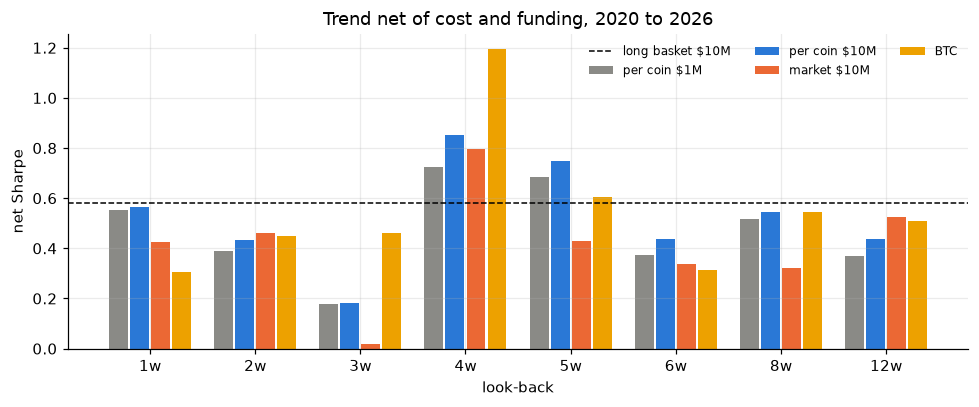
Every setting the research had tried on the wide data was rebuilt as a return series, 125 of them, plus about 30 from the ten-coin sample. They overlap heavily, so they are worth about 74 independent tests, and the lookback sweep with its history about 42. The best of 42 tests with no edge at all reaches a Sharpe of 0.86.
| per coin, always on | market, always on | moderate-month sleeve | |
|---|---|---|---|
| Sharpe | 0.85 | 0.79 | 1.54 |
| Luck bar | 0.86 | 0.86 | 1.75 |
| Probability real | 0.49 | 0.43 | 0.38 |
| Walk forward | 0.71 | 0.72 | never picked |
| Stamp | fail S1 S4 | fail S1 S4 | fail S1 S5 S6 |
Parked, not closed. The per coin book missed the park line by a hair, 0.49 against 0.5, on data that had been searched. What was left was a market-timing premium near 0.8 whose evidence fell short, and a hint that conditioning on the market pays. The only way to settle it was data nobody had looked at.
Everything on the perp data from 2020 had been searched, so nothing on it could pass. A registered test gets round that. One book is written down in full, with its pass, park and fail rules, and committed. It is then scored only on data nobody has looked at. It counts as a single trial with no penalty for searching, because nothing about it was chosen on the data that scores it.
| Hypothesis | Liquid crypto trends over 3 to 6 weeks net of cost, from slow reaction to news and forced deleveraging |
| Book | Each coin on the sign of its trailing return, averaged over 3, 4, 5 and 6 weeks. Inverse 12-week volatility, weekly at the Sunday close |
| Universe | Coins with a trailing 30-day median dollar volume of at least $10M, known the week before |
| Data A | Binance spot, August 2017 to December 2019, never loaded before |
| Data B | Binance USD-M perps, forward from the registering commit |
| Cost | The measured ladder at a $100k book. 10 bps fee on A, 5 bps and funding on B |
| Pass | Probability real of 0.95 on one trial over A and B together, and every other gate check |
| Park | Probability between 0.5 and 0.95, with A and B agreeing |
| Fail | Probability below 0.5, or a negative Sharpe on A alone |
| Reviews | Once on A, then each full year of B |
The book trades the band from 3 to 6 weeks, not the best single lookback, so the weak 3-week setting is inside it on purpose. The test was built to be able to fail. A real 0.8 edge fails on A alone about one time in nine, and an edge of zero about half the time. It was also built knowing a pass is years away. A and B together reach 500 weeks only after about seven years of B.
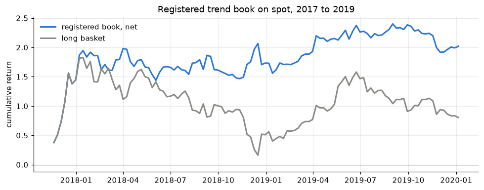
The book made 1.03 over 112 weeks, real with probability 0.94 on one trial. Neither fail rule fired, so the test continues to B.
The number flatters it. 72% of the return came from 7 weeks at the end of 2017, long BTC and then BTC and ETH through the December bubble. From 2018, on six to eight liquid coins, it made 0.37 over 105 weeks, and books of random signals reached as high as 0.98 on the same data. Taken alone, A fails two gate checks. Removing 2017 removes most of the Sharpe, and the bootstrap floor is below zero. Spot also cannot be shorted without borrowing, so the short side is a paper return.
Spot from 2017 to 2019 held too few liquid coins to say much. A does not refute the trend premium and adds little for it. The forward run on perps carries the test, and this section gets one update at each yearly review.
Writing the research up raised questions it had never asked. Why whole weeks. Why Sunday. And whether a trend should mean more than a price ending above where it started. This section answers them. It ran after the registered test, on data the research had already searched, so everything in it is exploratory and nothing in it can pass the gate.
Every result so far looked back a whole number of weeks and traded at Sunday's close. Here the lookback runs over every day count from 5 to 35, and the weekly rebalance moves to each of the seven days, 217 versions of each book. Built from daily data, the per coin book matches the weekly one exactly at 7, 14, 21, 28 and 35 days on a Sunday.
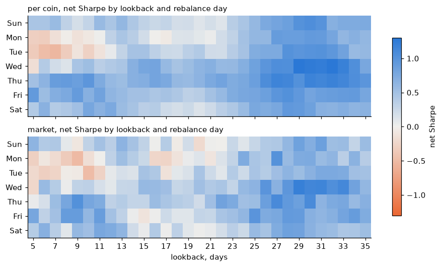
Any single rebalance day is arbitrary. The book that removes the choice splits its capital into seven slices and rebalances one slice each day. Every slice still holds for a week, so the trading is the same, but no day decides the result.
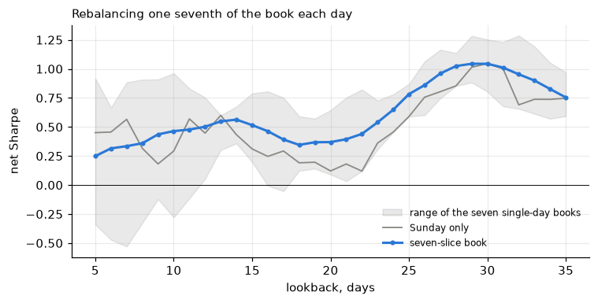
At 28 days the seven-slice book makes 1.02, above the 0.85 quoted so far. It is positive every year from 2020 to 2025 and loses 2026, at −0.50. The earlier weeks make 1.25 and the later weeks 0.66. Against everything the research has tried it is real with probability 0.58 to 0.67, where the Sunday book sat at 0.49. That moves the main result from just under the park line to clearly above it, by removing an arbitrary choice rather than picking a better setting.
The plain sign uses two prices, the start and the end of the window. A stricter idea fits a straight line through the prices in the window and describes the trend by three things.
Each was tested on lookbacks of 25 to 33 days across all seven rebalance days.
A typical 4-week price path fits a line with an \(R^2\) of 0.45 with no filtering at all. Prices wander, and a wandering price looks like a trend by accident, so a straight path is weak evidence that something real is pushing it.
The full rule takes direction from the slope and trades a coin only if its line is both steep enough and tight enough. Both thresholds were swept as a grid of sixteen books, each a 28-day seven-slice book, fully invested in the coins that pass, at the measured cost.
| steepness / \(R^2\) | none | 0.4 | 0.6 | 0.8 |
|---|---|---|---|---|
| none | 0.67 | 0.72 | 0.81 | 0.61 |
| 1.0 | 0.75 | 0.76 | 0.81 | 0.65 |
| 1.5 | 0.89 | 0.90 | 0.92 | 0.83 |
| 2.0 | 0.89 | 0.88 | 0.92 | 0.97 |
No cell beats the plain sign's 1.04 on its own. The strictest corner comes closest, steepness of at least 2.0 and \(R^2\) of at least 0.8, at 0.97. It is the only book positive in all seven years, 2026 included. It is also a tiny book. Only 6% of coin-weeks pass both thresholds, the typical slice holds 2 coins, and its deepest drawdown is 0.91 against 0.39.
The strict rule is not the plain sign with a filter on. Its returns correlate 0.37 with the plain sign's. The broad book earns from holding every liquid coin in the direction of its last four weeks. The strict book earns from the few coins making outsized, clean moves. They fail at different times, so the two were held together at equal risk.
| plain sign | strict rule | both | |
|---|---|---|---|
| Sharpe | 1.04 | 0.97 | 1.22 |
| Return a year | 56% | 110% | 54% |
| Deepest drawdown | 0.39 | 0.91 | 0.35 |
| Worst week | −25% | −38% | −18% |
| 2026 | −0.48 | 1.18 | 0.93 |
| Years positive, of 7 | 6 | 7 | 7 |
| Probability real | 0.59 | 0.52 | 0.76 |
The pair beats either book alone on every row, and it is the first thing in this research to improve on the plain sign. The pair's return is scaled to the plain sign's risk, which is why it reads 54%.
It is a lead, not a finding. The 0.76 does not charge for picking the best corner of sixteen or for pairing the two after seeing both. The strict book often rests on two coins, and 2026 is 35 weeks. About 5,700 exploratory books were run in this check, all on data already searched. The only fair test left is data that does not exist yet, so the pair needed a test on data it had never seen.
The pair could not be tested on more crypto history, because there was none left unseen. But the rule is a general idea, and other markets have decades of history this research had never loaded. So the pair was written up as a second registered test and run on US-listed ETFs.
| Hypothesis | A trend that is both steep and tight continues, and held beside the plain sign at equal risk it beats the plain sign alone |
| Plain sign | Every liquid name on the sign of its trailing 4-week return |
| Strict rule | A line fitted through 4 weeks of daily log price. A name trades on the sign of the slope only where steepness is at least 2.0 and \(R^2\) at least 0.8, fully invested in the names that pass |
| Pair | Both at equal risk, each scaled by its own volatility over the prior 52 weeks |
| Shared | Inverse 12-week volatility, a $10M floor on trailing 30-day median dollar volume, one slice per rebalance day. As coded in rule.py at the registering commit |
| Data C | 66 US-listed ETFs across stocks, bonds, commodities and currencies, the list in etf.py, adjusted daily closes from January 2005 to August 2026, never loaded by this lane. 20 trading days, five slices, 7.5 bps each way |
| Data B | Binance USD-M perps, forward from the registering commit. 28 days, seven slices, the measured ladder at a $100k book |
| Trials | One on each. Any other cut of this data is exploratory |
| Pass | The pair at S1 0.95 on one trial, above the plain sign, and every other signal gate check |
| Park | The pair at S1 between 0.5 and 0.95 |
| Fail | The pair at S1 below 0.5, or the strict rule negative, or the pair below the plain sign |
| Reviews | Once on C. Each full year of B. No other look counts |
C is a different market, so it tests the idea and not the crypto signal. A pass on C says a steep and tight trend continues outside the market it was found in. A fail says the crypto result was probably fitted. Only B can pass the crypto pair. C holds about 1,100 weeks, where a true Sharpe of 0.8 needs about 500 to pass four times in five. Every fund in C is still listed, so funds that closed are missing, and the cost of borrowing a fund to short is not modelled.
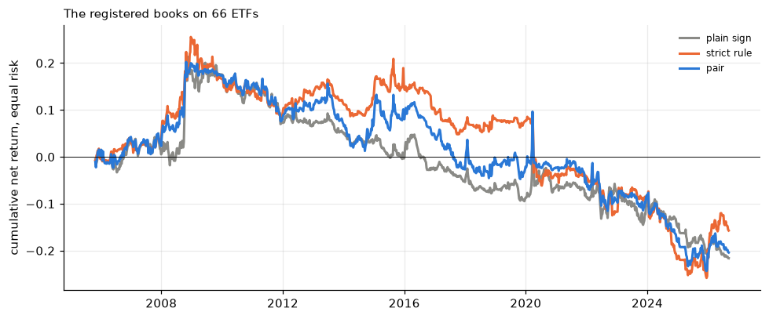
The test fails on the ETF data. Over 1,089 weeks the pair makes −0.16, the plain sign −0.17 and the strict rule −0.12. The pair is real with probability 0.24 on one trial, and two of the three fail rules fire, the probability under 0.5 and the strict rule negative. Gate fail S1 S2 S6 C4 V1. It was run before the registration was committed, with the spec files unchanged since they were written.
Four-week trend does not pay on these funds at all, so the strict rule had no working base to add to. The registered cost of 7.5 bps was heavy for funds that move a fifth as much as coins, but the failure does not rest on it. With no cost the pair makes 0.23 against 0.13 for the plain sign, all of it from before 2013. The crypto pair has no support from outside crypto, and stays an exploratory lead that only the forward perps run can settle.
Each mistake below was made, believed for a while, and caught. They are listed because the corrections changed the conclusions, and because each one is easy to make again.
| mistake | what it claimed | what was true |
|---|---|---|
| Bars stamped at their open | A close is seen when it happens | The engine could see it a bar early |
| A bar that could not tell luck from edge | 0.7 and every year positive is strict | It passes a real 0.8 one time in nine |
| Coin-weeks counted as independent | Market timing at t 12.7 | t 1.33 counted by week |
| A stretch used to choose, quoted as unseen | The moderate month makes 2.17 on unseen weeks | A search on the past alone never picks it |
| A winner with unmeasured neighbours | 4 weeks is a clean peak | 3, 5 and 6 weeks had never been run |
| A sleeve with free switching | 1.62 inside the condition | 1.56 with its costs, and the short basket makes 0.90 of it |
| Halt gaps left out of returns | No effect assumed | No effect, 0.03%, but now measured |
| Reading single Sunday cells | 3 weeks is a hole, 4 weeks may be luck | The hole is mostly the Sunday, and 4 weeks is a block on every day |
| A cost copied across markets | 7.5 bps is a cautious cost for ETFs | It is several times heavier against funds that move a fifth as much |
| A registered test run before its commit | The spec came first | It did, but the history cannot show it |
The pattern in most of them is the same. A number looked good, and the check that would have embarrassed it had not been run yet.
Following the trend on liquid crypto perpetuals has earned after measured costs at a small size. It is a premium for timing the direction of the whole crypto market over about four weeks, with a small extra from picking coins. It is not a discovery and it is not proven.
Signal research on trend is closed with the signal parked. The data that exists cannot say more.
Learned regimes, a model deciding whether to take each trade, and a learned signal were planned and left for the regime and strategy phases. Higher moments and positioning features were left untested.
Every setting tried counts toward the luck bar. Near copies count as less than one, so the ledger is measured in effective trials, the number of independent tests with the same expected best.
| family | settings | effective trials | status |
|---|---|---|---|
| Ten-coin sample. Lookbacks, funding-aware sign, dead band, cadence, shapes, combiners | about 30 | counted in full | superseded |
| Wide lookback sweep. 8 lookbacks, 4 books | 32 | 42 with the ten-coin trials | primary, fail S1 S4 |
| Everything else on the wide data. Coin-picking books, funding-aware sign, breakout, cleanliness, small coins, the condition map in both books, open interest, the moderate month and its variants | 93 | 74 for the whole | exploratory |
| Registered band, spot 2017 to 2019 | 1 | 1 | continues |
| Late check. Lookbacks in days by rebalance day, line fits, thresholds, the pair | about 5,700 | not added to the ledger | exploratory |
| Registered pair, ETFs | 1 | 1 | fail |
The late check's books are close copies of each other, sixteen threshold books were worth 2.3 independent tests, but they were not rebuilt into the ledger. The probabilities quoted for them use the ledger's 42 and 74, which is generous to them.
| section | notebooks | commits |
|---|---|---|
| 05 | old_data/trend_lookback_sweep, trend_funding_aware_sign, trend_cadence_dead_band, trend_signal_shapes, trend_combiner | 92fe183 98b45be 645c68e 60109ec |
| 06 | trend_reproduce | aebcc08 1fb1f3f bc68e5b |
| 07 to 10 | trend_eda, trend_costs, trend_wide_sweep, trend_conditions, trend_candidate | 83564e0 e5f9641 ac0b51f fbafe8f ef97f12 fda98ad |
| 11 | trend_shape, trend_decomp, trend_validate | ccde32d |
| 12 | trend_gate | 6274917 2230fb3 1db299a |
| 13 | trend_registered | a26b03f 8987f36 |
| 14 | trend_fine, trend_replicate | 4af95af |
Sections 09 to 11 quote the numbers as they stood on the day, from the notebook versions at those commits. The notebooks in the repository are the reruns from the review.